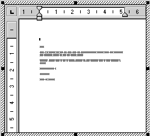
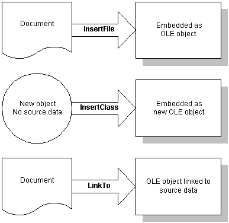

The OLE control contains an insertable OLE object. You can change the object in the control in the painter or in a script. You specify what is allowed in the control by setting PowerBuilder properties.
When you create an OLE control and insert an object, PowerBuilder activates the server application to allow you to modify the object. After you deactivate it (by clicking outside the object's borders in the Layout view), you can use the control's property sheets to set up the control.
 To specify the control's appearance and
behavior:
To specify the control's appearance and
behavior:
Double-click the control, or select Properties from the control's pop-up menu.
In the Properties view, give the control a name that is relevant to your application.
You will use this name in scripts. The default name is ole_ followed by a number.
Specify a value for Display Name for use by the OLE server. The OLE server can use this name in window title bars.
Specify the control's appearance and behavior by choosing appropriate settings in the Properties view.
In addition to the standard Visible, Enabled, Focus Rectangle, and Border properties, which are available for most controls, there are several options that control the object's interaction with the server:
The object in the OLE control needs to be activated so that the server application can manipulate it. For the user, double-clicking is the default method for activating the object. You can choose other methods by setting the control's Activation property, as described in the preceding table. During development, you activate the object in the Window painter.
 To activate an OLE object in the Window painter:
To activate an OLE object in the Window painter:
Select Open from the control's pop-up menu.
If the control is empty, Open is unavailable. You must select Insert to assign an object to the control first.
PowerBuilder invokes the server application and activates the object offsite.
Use the server application to modify the object.
When you have finished, deactivate the object by clicking outside its hatched border.
You can also choose Exit or Return on the server's File menu, if available.
In the painter, you can change or remove the object in the control.
 To delete the object in the control:
To delete the object in the control:
Select Delete from the control's pop-up menu.
The control is now empty and cannot be activated. Do not select Clear—it deletes the control from the window.
 To insert a different object in the control:
To insert a different object in the control:
Select Insert from the control's pop-up menu.
PowerBuilder displays the Insert Object dialog box.
Select Create New and select a server application, or select Create from File and specify a file, as you did when you defined the control.
Click OK.
You can insert a different object in the control by calling the InsertObject, InsertFile, InsertClass, or LinkTo function. You can delete the object in the control by calling Cut or Clear.
When the window containing the OLE control opens, the data is displayed using the information stored with the control in the PBL (or PBD or EXE file if the application has been built).
When the object is activated, either because the user double-clicks or tabs to it or because a script calls Activate, PowerBuilder starts the server application and enables in-place editing if possible. If not, it enables offsite editing.
As the user changes the object, the data in the control is kept up to date with the changes. This is obvious when the object is being edited in place, but it is also true for offsite editing. Because some server applications update the object periodically, rather than continually, the user might see only periodic changes to the contents of the control. Most servers also do a final update automatically when you end the offsite editing session. However, to be safe, the user should select the server's Update command before ending the offsite editing session.
An OLE object can be linked or embedded in your application. The method you choose depends on how you want to maintain the data.
The data for an embedded object is stored in your application. During development, it is stored in your application's PBL. When you build your application, it is stored in the EXE or PBD file. This data is a template or a starting point for the user. Although the user can edit the data during a session, the changes cannot be saved because the embedded object is stored as part of your application.
Embedding is suitable for data that will not change (such as the body of a form letter) or as a starting point for data that will be changed and stored elsewhere.
To save the data at runtime, you can use the SaveAs and Open functions to save the user's data to a file or OLE storage.
When you link an object, your application contains a reference to the data, not the data itself. The application also stores an image of the data for display purposes. The server application handles the actual data, which is usually saved in a file. Other applications can maintain links to the same data. If any application changes the data, the changes appear in all the documents that have links to it.
Linking is useful for two reasons:
Maintaining link information The server, not PowerBuilder, maintains the link information. Information in the OLE object tells PowerBuilder what server to start and what data file and item within the file to use. From then on, the server services the data: updating it, saving it back to the data file, updating information about the item (for example, remembering that you inserted a row in the middle of the range of linked rows).
Fixing a broken link Because the server maintains the link, you can move and manipulate an OLE object within your application without worrying about whether it is embedded or linked.
If the link is broken because the file has been moved, renamed, or deleted, the Update setting of the control determines how the problem is handled. When Update is set to Automatic, PowerBuilder displays a dialog box that prompts the user to find the file. You can call the UpdateLinksDialog function in a script to display the same dialog box. You can establish a link in a script without involving the user by calling the LinkTo function.
PowerBuilder displays a control with a linked object with the same shading that is used for an open object.
During execution, when a user activates the object in the OLE control, PowerBuilder tries to activate an embedded object in place, meaning that the user interacts with the object inside the PowerBuilder window. The menus provided by the server application are merged with the PowerBuilder application's menus. You can control how the menus are merged in the Menu painter (see "Menus for in-place activation").
When the control is active in place, it has a wide hatched border:

Offsite activation means that the server application opens and the object becomes an open document in the server's window. All the server's menus are available. The control itself is displayed with shading, indicating that the object is open in the server application.
 Limits to in-place activation The server's capabilities determine whether PowerBuilder
can activate the object in place. OLE 1.0 objects cannot be activated
in place. In addition, the OLE 2.0 standards specify that linked
objects are activated offsite, not in place.
Limits to in-place activation The server's capabilities determine whether PowerBuilder
can activate the object in place. OLE 1.0 objects cannot be activated
in place. In addition, the OLE 2.0 standards specify that linked
objects are activated offsite, not in place.
You can change the default behavior in a script by calling the Activate function and choosing whether to activate an object in place or offsite. If you set the control's Activation setting to Manual, you can write a script that calls the Activate function for the DoubleClicked event (or some other event):
ole_1.Activate(Offsite!)
 When the control will not activate You cannot activate an empty control (a control that does
not have an OLE object assigned to it). If you want the user to
choose the OLE object, you can write a script that calls the InsertObject function.
When the control will not activate You cannot activate an empty control (a control that does
not have an OLE object assigned to it). If you want the user to
choose the OLE object, you can write a script that calls the InsertObject function.
When an object is activated in place, menus for its server application are merged with the menus in your PowerBuilder application. The Menu Merge Option settings in the Menu painter let you control how the menus of the two applications are merged. The values are standard menu names, as well as the choices Merge and Exclude.
 To control what happens to a menu in your application
when an OLE object is activated:
To control what happens to a menu in your application
when an OLE object is activated:
Open the menu in the Menu painter.
Select a menu item that appears on the menu bar. Menu Merge Option settings apply only to items on the menu bar, not items on drop-down menus.
On the Style property page, choose the appropriate Menu Merge Option setting. Table 19-1 lists these settings.
Repeat steps 2 and 3 for each item on the menu bar.
In general, you should assign the File, Edit, Window, and Help Menu Merge options to the File, Edit, Window, and Help menus. Because the actual menu names might be different in an international application, you use the Menu Merge Option settings to make the correct associations.
The effect of the Menu Merge Option settings is that the menu bar displays the container's File and Window menus and the server's Edit and Help menus. Any menus that you label as Merge are included in the menu bar at the appropriate place. The menu bar also includes other menus that the server has decided are appropriate.
When an OLE object is displayed in the OLE control, the user can interact with that object and the application that created it (the server). You can also program scripts that do the same things the user might do. This section describes how to:
For information about automation for the control, see "OLE objects in scripts ".
Generally, the OLE control is set so that the user can activate the object by double-clicking. You can also call the Activate function to activate the object in a script. If the control's Activation property is set to Manual, you have to call Activate to start a server editing session:
ole_1.Activate(InPlace!)
You can initiate general OLE actions by calling the DoVerb function. A verb is an integer value that specifies an action to be performed. The server determines what each integer value means. The default action, specified as 0, is usually Edit, which also activates the object.
For example, if ole_1 contains a Microsoft Excel spreadsheet, the following statement activates the object for editing:
ole_1.DoVerb(0)
Check the server's documentation to see what verbs it supports. OLE verbs are a relatively limited means of working with objects; automation provides a more flexible interface. OLE 1.0 servers support verbs but not automation.
PowerBuilder provides several functions for changing the object in an OLE control. The function you choose depends on whether you want the user to choose an object and whether the object should be linked or embedded, as shown in Table 19-2.
Figure 19-1 illustrates the behavior of the three functions that do not allow a choice of linking or embedding.

You can also assign OLE object data stored in a blob to the ObjectData property of the OLE control:
blob myblob
... // Code to assign OLE data to the blob
ole_1.ObjectData = myblob
The Contents property of the control specifies whether the control accepts embedded and/or linked objects. It determines whether the user can choose to link or embed in the InsertObject dialog box. It also controls what the functions can do. If you call a function that chooses a method that the Contents property does not allow, the function will fail.
Use the Browser to find out the registered names of the OLE server applications installed on your system. You can use any of the names listed in the Browser as the argument for the InsertClass function, as well as the ConnectToObject and ConnectToNewObject functions (see "Programmable OLE Objects ").
For more information about OLE and the Browser, see "OLE information in the Browser ".
Using the Cut, Copy, and Paste functions in menu scripts lets you provide clipboard functionality for your user. Calling Cut or Copy for the OLE control puts the OLE object it contains on the clipboard. The user can also choose Cut or Copy in the server application to place data on the clipboard. (Of course, you can use these functions in any script, not just those associated with menus.)
There are several Paste functions that can insert an object in the OLE control. The difference is whether the pasted object is linked or embedded.
If you have a general Paste function, you can use code like the following to invoke PasteSpecial (or PasteLink) when the target of the paste operation is the OLE control:
graphicobject lg_obj
datawindow ldw_dw
olecontrol lole_ctl
// Get the object with the focus
lg_obj = GetFocus()
// Insert clipboard data based on object type
CHOOSE CASE TypeOf(lg_obj)
CASE DataWindow!
ldw_dw = lg_obj
ldw_dw.Paste()
...
CASE OLEControl!
lole_ctl = lg_obj
lole_ctl.PasteSpecial()
END CHOOSE
If you embed an OLE object when you are designing a window, PowerBuilder saves the object in the library with the OLE control. However, when you embed an object during execution, that object cannot be saved with the control because the application's executable and libraries are read-only. If you need to save the object, you save the data in a file or in the database.
For example, the following script uses SaveAs to save the object in a file. It prompts the user for a file name and saves the object in the control as an OLE data file, not as native data of the server application. You can also write a script to open the file in the control in another session:
string myf
ilename, mypathname
integer result
GetFileSaveName("Select File", mypathname, &
myfilename, "OLE", &
"OLE Files (*.OLE),*.OLE")
result = ole_1.SaveAs(myfilename)
When you save OLE data in a file, you will generally not be able to open that data directly in the server application. However, you can open the object in PowerBuilder and activate the server application.
When you embed an object in a control, the actual data is stored as a blob in the control's ObjectData property. If you want to save an embedded object in a database for later retrieval, you can save it as a blob. To transfer data between a blob variable and the control, assign the blob to the control's ObjectData property or vice versa:
blob myblob
myblob = ole_1.ObjectData
You can use the embedded SQL statement UPDATEBLOB to put the blob data in the database (see the PowerScript Reference ).
You can also use SaveAs and Save to store OLE objects in PowerBuilder's OLEStorage variables (see "Opening and saving storages").
When the user saves a linked object in the server, the link information is not affected and you do not need to save the open object. However, if the user renames the object or affects the range of a linked item, you need to call the Save function to save the link information.
There are several events that let PowerBuilder know when actions take place in the server application that affect the OLE object.
Events that have to do with data are:
When these events occur, the changes are reflected automatically in the control. If you need to perform additional processing when the object is renamed, saved, or changed, you can write the appropriate scripts.
Because of the architecture of OLE, you often cannot interact with the OLE object within these events. Trying to do so can generate a runtime error. A common workaround is to use the PostEvent function to post the event to an asynchronous event handler. You do not need to post the SaveObject event, which is useful if you want to save the data in the object to a file whenever the server application saves the object.
If the server supports property notifications, then when values for properties of the server change, the PropertyRequestEdit and PropertyChanged events will occur. You can write scripts that cancel changes, save old values, or read new values.
For more information about property notification, see "Creating hot links".